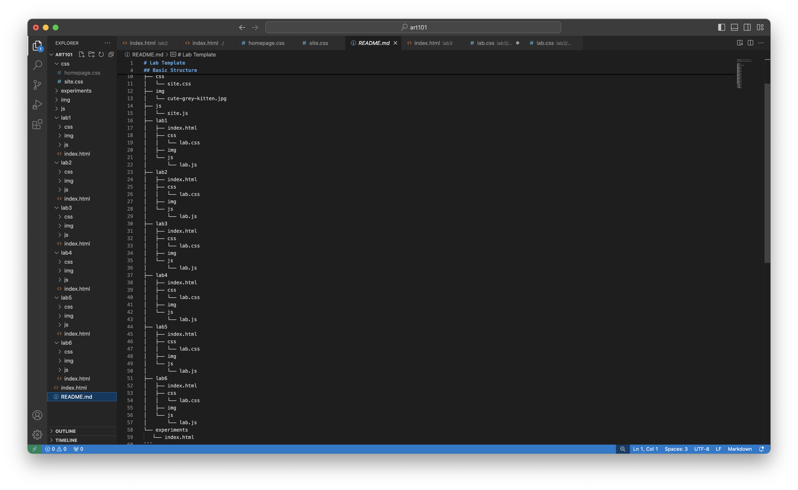

Lab 3 File Structures and File Transfer
Challenge
I did not have any big challenges related to the assignment most of my challenges arose from trying out some CSS code to stylize my page
Problems
Only problem that I had was getting the images sources into the right folder and making a proper link to the source file
Results
Well look at the screenshot below it is very meta
File structures
Homepage

index.html for lab 3
Lab 3 on local